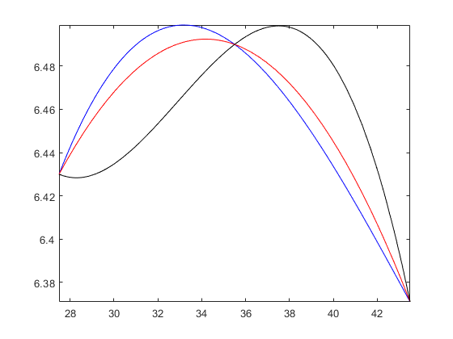

x0 = 27.5;
x1 = 35.5;
x2 = 43.5;
y0 = 6.430;
y1 = 6.490;
y2 = 6.371;
A = [x0^3 x0^2 x0 1 0 0 0 0;
x1^3 x1^2 x1 1 0 0 0 0;
0 0 0 0 x1^3 x1^2 x1 1;
0 0 0 0 x2^3 x2^2 x2 1;
3*x1^2 2*x1 1 0 -3*x1^2 -2*x1 -1 0;
6*x1 2 0 0 -6*x1 -2 0 0;
6*x2 2 0 0 0 0 0 0;
0 0 0 0 6*x2 2 0 0]
B = [y0;y1;y1;y2;0;0;0;0]
Ainv = inv(A);
C = Ainv*B
a1=C(1);b1=C(2);c1=C(3);d1=C(4);a2=C(5);b2=C(6);c2=C(7);d2=C(8);
s1 = @(x) a1*x^3 + b1*x^2 + c1*x +d1;
s2 = @(x) a2*x^3 + b2*x^2 + c2*x +d2;
fplot(s1,[x0 x1],'b');
hold on
fplot(s2,[x1 x2],'b');
f2 = @(x) (x-x1)/(x0-x1)*(x-x2)/(x0-x2)*y0 + (x-x0)/(x1-x0)*(x-x2)/(x1-x2)*y1 + (x-x0)/(x2-x0)*(x-x1)/(x2-x1)*y2;
fplot(f2,[x0 x2],'r');
x3 = 19.5;
y3 = 6.742;
f3 = @(x) (x-x0)/(x3-x0)*(x-x1)/(x3-x1)*(x-x2)/(x3-x2)*y3 + (x-x3)/(x0-x3)*(x-x1)/(x0-x1)*(x-x2)/(x0-x2)*y0 + (x-x3)/(x1-x3)*(x-x0)/(x1-x0)*(x-x2)/(x1-x2)*y1 + (x-x3)/(x2-x3)*(x-x0)/(x2-x0)*(x-x1)/(x2-x1)*y2;
fplot(f3,[x0 x2],'k')
CubicSpline = s1(34)
Legrange2 = f2(34)
Legrange3 = f3(34)
A =
1.0e+04 *
Columns 1 through 7
2.0797 0.0756 0.0027 0.0001 0 0 0
4.4739 0.1260 0.0036 0.0001 0 0 0
0 0 0 0 4.4739 0.1260 0.0036
0 0 0 0 8.2313 0.1892 0.0043
0.3781 0.0071 0.0001 0 -0.3781 -0.0071 -0.0001
0.0213 0.0002 0 0 -0.0213 -0.0002 0
0.0261 0.0002 0 0 0 0 0
0 0 0 0 0.0261 0.0002 0
Column 8
0
0
0.0001
0.0001
0
0
0
0
B =
6.4300
6.4900
6.4900
6.3710
0
0
0
0
C =
0.0001
-0.0076
0.3122
2.3841
0.0001
-0.0076
0.3122
2.3841
Warning: Function behaves unexpectedly on array inputs. To improve performance,
properly vectorize your function to return an output with the same size and
shape as the input arguments.
Warning: Function behaves unexpectedly on array inputs. To improve performance,
properly vectorize your function to return an output with the same size and
shape as the input arguments.
Warning: Function behaves unexpectedly on array inputs. To improve performance,
properly vectorize your function to return an output with the same size and
shape as the input arguments.
Warning: Function behaves unexpectedly on array inputs. To improve performance,
properly vectorize your function to return an output with the same size and
shape as the input arguments.
CubicSpline =
6.4978
Legrange2 =
6.4924
Legrange3 =
6.4758
